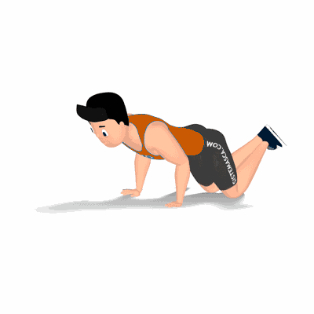

Flexão Solo com Apoio

Exercício físico realizado em posição de prancha para fortalecimento e hipertrofia da região dos peitorais. Trabalha também, músculos auxiliares, tais como: deltoides e tríceps.
Ficha Técnica
Tipo: Musculação
Grupo Muscular: Peito
Aparelho: Nenhum
Músculos: Nenhum
Como realizar
- Apoie o corpo horizontalmente no solo sobre os joelhos e os cotovelos estendidos;
- Posicione as mãos em uma distância maio que a dos ombros e manter a coluna alinhada;
- Desça o corpo de maneira controlada, flexionando os cotovelos para trás até o peito chegar próximo do solo;
- Empurre o corpo para cima para retornar à posição inicial;
- Repita o movimento, conforme o número de repetições orientado pelo professor.
 RC STORE
RC STORE